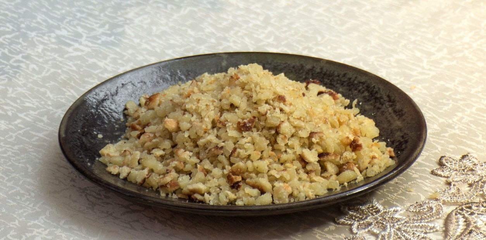

REVIRO

Ingredientes:
- 1kg de harina
- 1 cucharada de sal fina
- 2 huevos
- 1 taza de agua
- 150ml de aceite
- OPCIONAL: Huevos o azúcar
Preparación:
- Mezclar la sal y harina e ir revolviendo
- En el centro, agregar los huevos y algo de agua hasta que la mezcla quede húmeda
- En una olla ya caliente, ponemos una cantidad generosa de aceite (alrededor de 150ml)
- Cuando el aceite se caliente, tirar en la olla la mezcla por unos 5 minutos
- Con una cuchara de madera, golpeamos la masa hasta que los pedazos grandes se vayan achicando. Hacer esto hasta que la masa quede pequeña y dorada
- Si se quiere comer dulce, se le puede agregar algo de azúcar, si se prefiere salado se pueden poner encima unos huevos fritos
- Servir :D, generalmente se toma con cocido para disfrutar más
Elegí esta receta porque es un plato muy común en Posadas, donde pasé mucho tiempo de mi infancia
Algunas recetas parecidas al reviro:
Contactame!!